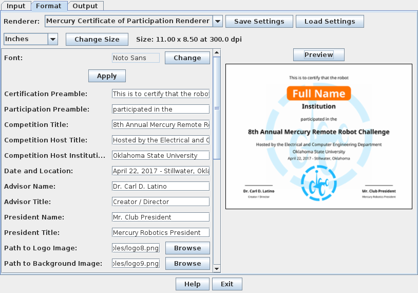

The next step after data input is to specify the format of the certificate by using the Format tab:

The Mercury Certificate of Participation Renderer must be selected. The size can be specified by the controls on the second row. It is recommended to match these dimensions with the size of the paper that the certificates will be printed on. For example, if you are going to print the certificate on US Letter paper in landscape orientation, specify the size as 11" x 8.5" with 300 dpi resolution.
The certificate then can be formatted by entering the different sentences, names, and titles that are going to be printed, selecting the font to use, and the height of various text in proportion to the page height. After clicking Apply if a parameter is modified, click on Preview to see how the certificate template will look like (the name and institution will be replaced with the participants').
As shown in the example, the certificate renderer can place a background picture and a logo at the end of the page. Leave the Path to Logo Image or Path to Background Image fields empty if they are not desired.
After the format for the certificates is specified. Click on the output tab:
The program can output three different file formats for the certificates
In PDF Output, specify the page size and orientation that match the certificate size from the Format tab. Enter 0 for margins and spacing so the certificate image will fill the whole page. Once done, enter the name of the file to output or click Browse to browse your computer and specify a file name. Click Save to generate the PDF file with each page bearing a certificate.
The PNG and JPG Outputs will write a collection of PNG or JPG images in the specified directory. Multiple certificates that share the same number and name will only have a single image output. The size of the images are calculated using the certificate size and resolution specified in the Format tab.
The file names will be output as Number-Name.png/.jpg
The certificate renderer honors the Background color setting of a data entry. If some of the certificates seem to have dark background, make sure that they have the desired Background color in the Input tab.